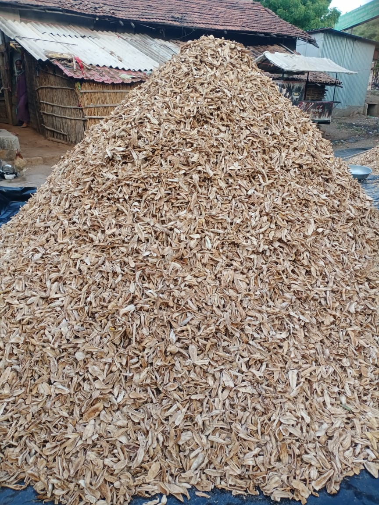

Tailor-made traditional formulations, personalized oil and spice ratios, and FSSAI-compliant commercial packing.

Every family and commercial dining concept carries a unique taste preference. Our custom preparation service invites caterers, restaurateurs, and families to co-create batches tailored to regional palate profiles.
Whether you require an Andhra-style fiery Avakaya with unrefined gingelly oil, a North Indian spicy stuffed red mirch with dry mango amchur, or a mild zero-oil sun-cured sweet-and-tangy lemon pickle, we calibrate the recipe, salt levels, and mustard strength to your exact palate.
From recipe consultation to solar aging and tamper-proof delivery.
We discuss your target regional profile, oil preference, salt content, and volume.
We dispatch a pilot test sampler jar to finalize spices and acidity before bulk curing.
Produce is hand-cut, stone-pounded, and sun-aged in dedicated ceramic martabans.
Packed in steam-sterilized glass jars or food-grade bulk drums with custom labels.
Cushioned freight dispatch with express courier tracking directly to your kitchen.
Your custom blended recipe remains confidential and exclusively reserved for your brand or restaurant establishment.
Complete support for your personalized logos, nutritional facts labels, FSSAI compliance printing, and barcode tagging.
Start small with pilot batches of 25kg or scale up to multi-ton seasonal harvests with consistent supply assurances.
Demonstration pricing for commercial small-batch custom preparation and private labeling.
(Demonstration Rate)
(Demonstration Rate)
(Demonstration Rate)
Because we honor traditional solar curing without artificial accelerators, custom pickle batches take between 14 to 28 days depending on the produce (raw mangoes require 21 days, whereas shredded pickles like chundo take 14 days). Sun-dried papads can be completed in 7 to 10 days.
Yes, absolutely! Many diaspora clients send us their grandmother's written spice measurements. Our master custodians review the ratios, prepare a pilot tasting jar, and upon your confirmation, produce the desired volume.
Traditional preservation relies on natural science: thorough sun-drying to remove free moisture, exact concentrations of pure rock salt (which inhibits microbial growth), natural antioxidant properties of cold-pressed mustard oil, and the natural bio-active compounds in turmeric, fenugreek, and asafoetida (hing).
Yes. All consignments are packed in impact-resistant, multilayered bubble cartons with partition honeycombs to prevent glass jar vibration and delivered via trusted logistics partners.